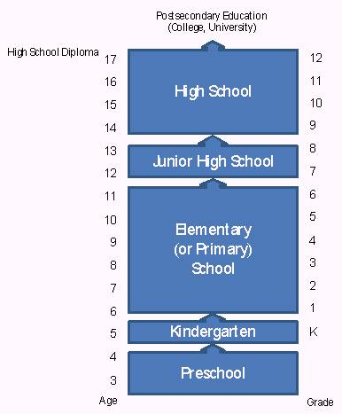

Weitere Datenübertragung Ihres Webseitenbesuchs an Google durch ein Opt-Out-Cookie stoppen - Klick!
Stop transferring your visit data to Google by a Opt-Out-Cookie - click!: Stop Google AnalyticsCookie Info.Datenschutzerklärung
The American high school system:
Facts and evaluation I
Facharbeit aus dem Fach Englisch
School Thesis In The Subject English
am Meranier-Gymnasium Lichtenfels 25.01.2008
In htm codiert und mit Videos ergänzt von Konrad Fischer
Table of contents
1 Introduction
1.1 A preliminary remark
1.2 The Pledge of Allegiance
1.3 The K-12 educational system
1.4 Typical progression of a school career
1.5 Choosing a school
2 The high school system
2.1 School grades
2.2 School organization
2.3 Basic curricular structure
2.4 Graduation requirements
2.5 Advanced Placement Program
2.6 Grading scale
2.7 Standardized testing
2.8 Extracurricular activities
2.9 Associated Student Body
2.10 School uniform
2.11 Students with special needs
2.12 Private or state schools
2.13 Becoming a high school teacher
The goal of this study is to answer basic questions about the American
high school system. It will cover the most important aspects of this
type of school and explain how it works. By comparing it with the
German school- and educational system, the reader gets a better picture
of the system. Most of the information about the American high school
system included in this paper is taken from the Healdsburg High School
in California, which I attended for one year as an exchange student. As
high schools in the United States differ from state to state and even
from school to school within a state or school district, Healdsburg
High can only serve as one example taken from a vast variety of high schools in the US.
1.2 The Pledge of Allegiance
“I pledge allegiance to the Flag
of the United States of America,
and to the Republic for which it stands:
one Nation under God, indivisible,
with Liberty and Justice for all.”
In many schools in the United States, the Pledge of Allegiance is cited
every morning before class starts. The students stand up, put their
hands over their heart and recite the pledge of allegiance as they look at the flag of the US.
What can you say about the high school ?
1.3 The K-12 educational system
This educational system starting with kindergarten and continuing up to
the twelfth grade is generally called the K-12 system. Typically,
during kindergarten and elementary school, a classroom will consist of
twenty to thirty students and a single teacher who teaches various
subjects and remains with the class throughout the day. One or two
breaks and one lunch time are typical in an elementary
school’s schedule. Other elementary schools may
employ a two-teacher system, where students will go to a different
teacher’s classroom for learning a specific subject. This and
other variations are attempts at clear and effective teaching, as well
as preparation for middle school and high school. During
middle school, the practice of students moving to different classrooms
that correspond to different academic subjects throughout the day is
firmly established. This period also offers more choice to a
student, as classes for different academic levels are being offered.
The last phase of the compulsory education and the K-12 educational
system is the high school. During this period, students begin
to have longer blocks of academic periods that do not occur daily, in
preparation for the longer, less frequent, but more academically loaded
university and college level courses.
The academic system employed in the United States sets standards for
the curriculum taught and the academic standards that have to be met.
However, it also offers the flexibility needed to meet the needs of the
immediate and local community at the city, county, and state level.
1.4 Typical progression of a school career
Throughout the US, children generally begin their school career at the
age of three or four when their parents voluntarily put them in
preschool (sometimes called nursery school). The task of a preschool is
to prepare these kids academically and socially for kindergarten or the
first grade. Preschools are defined as: “center-based
programs for 4-year olds that are fully or partially funded by state
education agencies and that are operated in schools or under the
direction of state and local education agencies.”
In the United States, the kindergarten is part of the K-12
educational system. This pedagogical institution for five and six year
old children has the objective of infantile advancement, of developing
creative thinking and playing, and of learning adequate group
behavior. “Children attend kindergarten to learn to
communicate, play, and interact with others
appropriately” and develop basic skills. Today this
form of education constitutes a transition period from the education at
home to the academic education.
Compulsory education starts with elementary school – known as
elementary or primary education. In the US, an elementary school
usually goes up to sixth grade and sometimes includes kindergarten as
well. As primary targets for improvement, children have to focus on
reading and math.
Serving as a link between primary and secondary education, the junior
high school embraces usually grades seven and eight. This school is
intermediate between elementary school and high school, often also
called middle school.
Obama shows that the American School system is a failure
The high school is the final stage of secondary education. In
the first year of high school, ninth grade, “grades become
part of a student’s official transcript” ;
therefore they are encouraged to take more responsibility. Universities
or future employees are interested in the attendance rate and grades of
students, so the decisions that are made in the four years of high
school affect a student’s future. For the most part, an
explanation of the system of this type of school is what this paper
will be about.
High school graduates are able to continue their school career by
entering a college or university, which build the postsecondary
education. Such an institution of higher learning commonly lasts from
two to seven years and is terminated with a bachelor´s-,
master´s- or even an advanced professional degree.
The following figure clarifies the progression of a school career:

1.5 Choosing a school
At first, the question comes up which school parents should choose for
their child. Well, the answer is easy: Parents
“don´t pick a school” for their
child, they “pick an address, either by renting an apartment
or buying a home or condo” . The address decides which school
their child will attend. Americas´ states are divided into
several school districts, each in control of a given area. By telling
the local school district or school their prospective address, parents
can find out which school their child will attend. Often the boundaries
of cities are not those of school districts. It may be
“possible for children on one street to attend one district
and children just up the street or on the next block to be assigned to
another district”.